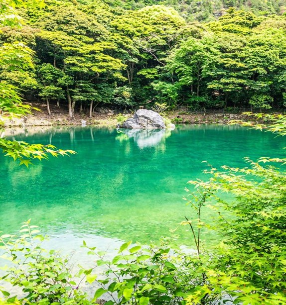
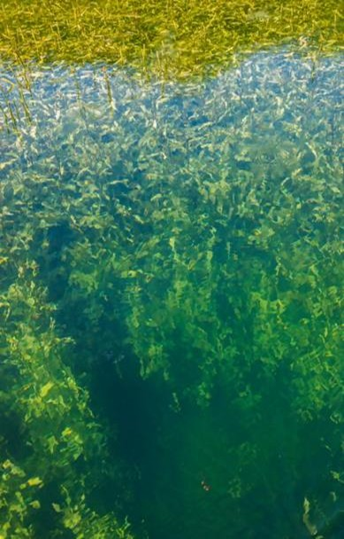

パートナー企業を募集します
環境省の定める絶滅危惧IA類に指定される水生植物「ガシャモク」の域外保全にご協力いただけるパートナー企業を募集します。自生する池の改修工事に伴う保全リスク分散のため、企業の皆様とともに保全に取り組み、生育環境や管理方法に関する知見を蓄積・共有することで、より効果的な保全手法の確立と、将来的な生物多様性の回復を目指します。
希少種「ガシャモク」とお糸池
ガシャモクは、かつて全国の湖沼やため池に広く生育していましたが、生育環境の改変や水環境の変化などにより急速に減少し、現在、国内の自生地はわずか３か所となっています。その中でも、小倉南区のお糸池は国内最大規模の自生地であり、地域団体等による長年の保全活動によって、現在も豊かで美しい群落が維持されています。

お糸池

水中のガシャモク
お糸池の改修工事
お糸池では令和９年度からため池改修工事が予定されており、池の水を数年間抜いて施工を行います。市では隣接地に保全用プールを整備する計画ですが、病気や水質悪化等の不測の事態に備えるためには、複数の場所で保全する「域外保全」によるリスク分散が重要です。
企業の皆様に期待される効果
〇生物多様性保全の取組として発信できます
本事業への参加は、生物多様性保全の実践として、自社ホームページやサステナビリティレポート、統合報告書等で発信いただけます。また、TNFD（自然関連財務情報開示）やネイチャーポジティブに関する取組の一例として位置付けることができます。
〇企業価値・ブランドイメージの向上につながります
絶滅危惧種の保全という地域に根ざした活動への参加は、環境経営やESGへの取組を社内外へ示す機会となり、企業価値やブランドイメージの向上につながることが期待されます。
〇地域とのネットワークづくりにつながります
参加企業同士や地域団体、市との情報交換や知見共有を通じて、新たな連携やネットワークづくりの機会となります。
企業の皆様にお願いしたいこと
保全期間：
工事期間を含む３年以上ガシャモクの育成・保全をお願いします。
保全場所：
企業敷地内の施設など、ガシャモクを育成できる環境
（水槽、ビオトープ、ため池、その他、市と協議の上適切と認められる場所）
日常管理：
定期的な水替え、藻の除去、日光の確保、生育状況の確認 など
知見の蓄積・共有：
ガシャモクは、生態について未解明な部分が多い植物です。
そのため、域外保全環境での生育状況や管理方法などを定期的にご報告いただき、
市や参加企業、地域団体と知見を共有しながら、より効果的な保全方法を検討していきます。
異なる環境下で育成することで得られる知見は、将来的な生息地の拡大にもつながることが期待されます。
ガシャモクの提供時期等
提供時期：
令和８年12月～令和９年１月頃（予定）
提供方法：
お糸池の水抜き時に、底泥から採取した埋土種子をお渡しします。
今後のスケジュール（案）
R8年7月～9月：公募期間（目安）
R8年9月～11月：協力企業での受け入れ環境整備
R8年12月～1月：ガシャモクの譲渡・保全開始
R8年春以降：発芽確認・定期的な状況共有会
興味をお持ちの企業様は、ぜひご連絡ください！
ガシャモクの保全活動をきっかけに、企業間のネットワークや地域との絆を深めていきたいと考えています。「詳しい話を聞いてみたい」というだけでも大歓迎です。
【ご連絡・相談窓口】
北九州市環境局 ネイチャーポジティブ推進課
E-mail： kan-naturepositive@city.kitakyushu.lg.jp
TEL： ０９３－５８２－２２３９